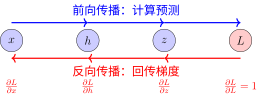
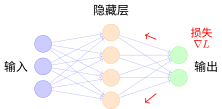

反向传播算法#
反向传播的本质：信用分配#
神经网络训练时，我们根据最终损失来调整参数。核心问题是：损失是由很多参数共同造成的，每个参数该"背多少锅"？
反向传播（Backpropagation）就是解决这个"信用分配问题"的高效算法。
类比：团队项目的责任分摊#
想象一个团队项目失败了（损失很大），需要找出每个人的责任：
前向传播：项目执行过程，每个人完成自己的任务
反向传播：从失败结果倒推，计算每个人对失败的责任（梯度）
链式法则：如果A的工作影响了B，B的责任要按贡献度传递给A

反向传播：梯度从输出流回输入
链式法则：梯度的传递机制#
反向传播算法的核心是链式法则（Chain Rule）。想象你改变了输入 \(x\) 一点点，这个变化会层层传递，最终影响损失 \(L\)。链式法则告诉我们：总的影响是各层影响的乘积。
对于复合函数 \(z = f(g(x))\)，如果 \(x\) 变化了 \(\Delta x\)：
首先影响 \(g\)：\(\Delta g \approx \frac{\partial g}{\partial x} \Delta x\)
然后影响 \(z\)：\(\Delta z \approx \frac{\partial z}{\partial g} \Delta g\)
综合起来：\(\Delta z \approx \frac{\partial z}{\partial g} \cdot \frac{\partial g}{\partial x} \cdot \Delta x\)
所以：
直觉：影响会层层叠加——就像多米诺骨牌，第一块倒下的角度（\(\frac{\partial g}{\partial x}\)）乘以第二块倒下的角度（\(\frac{\partial z}{\partial g}\)），就是最后一块倒下的总角度。
示例：简单计算图#
考虑 \(f(x, y) = (x + y) \times y\)，设 \(x=2, y=3\)：
前向传播：
\(a = x + y = 2 + 3 = 5\)
\(f = a \times y = 5 \times 3 = 15\)
反向传播（假设损失对 \(f\) 的梯度为1）：
\(\frac{\partial f}{\partial f} = 1\)
\(\frac{\partial f}{\partial a} = y = 3\)（乘法规则）
\(\frac{\partial f}{\partial y} = a = 5\)（乘法规则）
\(\frac{\partial f}{\partial x} = \frac{\partial f}{\partial a} \cdot \frac{\partial a}{\partial x} = 3 \times 1 = 3\)（链式法则）
\(\frac{\partial f}{\partial y}\) 有两条路径：\(= 5 + 3 = 8\)
PyTorch中的自动微分#
PyTorch通过autograd自动完成反向传播：
import torch
# 创建张量，启用梯度跟踪
x = torch.tensor(2.0, requires_grad=True)
y = torch.tensor(3.0, requires_grad=True)
# 前向传播
a = x + y # a = 5
f = a * y # f = 15
# 反向传播
f.backward()
print(f"∂f/∂x = {x.grad}") # 输出: 3.0
print(f"∂f/∂y = {y.grad}") # 输出: 8.0
关键机制：
神经网络中的反向传播#
对于多层神经网络，反向传播从输出层逐层回传：

神经网络反向传播示意
流程：
前向传播：数据从输入层 → 隐藏层 → 输出层，计算预测和损失
反向传播：梯度从输出层 ← 隐藏层 ← 输入层，计算每个参数的梯度
参数更新：使用梯度下降更新权重
常见操作的梯度#
操作 |
前向 |
反向梯度 |
|---|---|---|
加法 \(z = x + y\) |
\(z = x + y\) |
\(\frac{\partial L}{\partial x} = \frac{\partial L}{\partial z}\), \(\frac{\partial L}{\partial y} = \frac{\partial L}{\partial z}\) |
乘法 \(z = x \times y\) |
\(z = x \times y\) |
\(\frac{\partial L}{\partial x} = \frac{\partial L}{\partial z} \cdot y\), \(\frac{\partial L}{\partial y} = \frac{\partial L}{\partial z} \cdot x\) |
ReLU \(z = \max(0, x)\) |
\(z = \max(0, x)\) |
\(\frac{\partial L}{\partial x} = \frac{\partial L}{\partial z}\) (if \(x>0\)), else 0 |
Sigmoid \(z = \sigma(x)\) |
\(z = \sigma(x)\) |
\(\frac{\partial L}{\partial x} = \frac{\partial L}{\partial z} \cdot z(1-z)\) |
反向传播的优势#
1. 计算效率#
反向传播算法的时间复杂度是 \(O(n)\)，其中 \(n\) 是计算图中边的数量。相比之下，数值差分需要 \(O(n \times p)\)，其中 \(p\) 是参数数量。
关键：通过复用中间计算结果，避免重复求导。
2. 模块化设计#
每个操作只需要定义：
前向：如何计算输出
反向：如何计算梯度
这使得添加新操作变得简单。
常见问题#
梯度消失（Vanishing Gradient）#
想象一个100层的神经网络。当你训练时，发现靠近输出层的参数更新正常，但靠近输入层的参数几乎不动——就像前面几十层"冻住"了一样。这就是梯度消失。
为什么会发生？回顾链式法则：梯度是各层影响的乘积。如果每一层的梯度都小于1（比如Sigmoid在饱和区的梯度只有0.01），100层连乘后：
这个数小到计算机都当成0处理了！具体场景是：使用Sigmoid/Tanh激活函数时，输入值很大或很小会让函数进入"饱和区"，梯度接近0；网络层数越深，问题越严重。
后果：前面的层学不到东西，模型退化成"浅层网络"——只有后面几层在学习。对于图像数据，前面的层本应学习边缘、纹理等基础特征，但这些特征学不到。
解决方案：
ReLU激活函数：正区间的梯度恒为1，不会衰减
批归一化（BatchNorm）：控制每层的数值范围，避免进入饱和区
残差连接（ResNet）：让梯度有"捷径"可以直达前面层
梯度爆炸（Exploding Gradient）#
训练过程中，损失突然变成NaN（不是数字），或者参数变得极其巨大（比如从0.1变成1000000），模型完全失控。这就是梯度爆炸。
为什么会发生？和梯度消失相反，如果每层的梯度都大于1（比如权重初始化过大，梯度为2），100层连乘后：
这是一个天文数字！参数会被更新得极其剧烈，完全偏离最优解。常见于权重初始化不当，或循环神经网络（RNN）处理长序列时。
后果：参数更新过大跳出最优解区域，损失函数震荡发散，甚至数值溢出（NaN）导致训练彻底失败。
解决方案：
梯度裁剪：设定梯度上限，超过就截断
权重正则化（L2正则）：惩罚过大的权重
更好的初始化：如Xavier初始化、He初始化，控制初始梯度规模
更小的学习率：让参数更新更温和
总结#
反向传播是深度学习的核心算法：
信用分配：将最终损失"分摊"给每个参数
链式法则：梯度从输出层逐层回传
高效计算：复用中间结果，时间与网络规模线性相关
贡献者与修订历史
查看详细修订记录
-
ae2053f2026-04-26 - Heyan Zhu: docs(math-fundamentals): add task-formulations and update related content -
756a7932026-04-25 - Heyan Zhu: docs(math-fundamentals): update content structure and improve explanations -
cec393d2025-12-11 - Heyan Zhu: docs: partially complete migration and restructure course materials -
0c291d72025-12-10 - Heyan Zhu: docs: restructure course materials and add new content